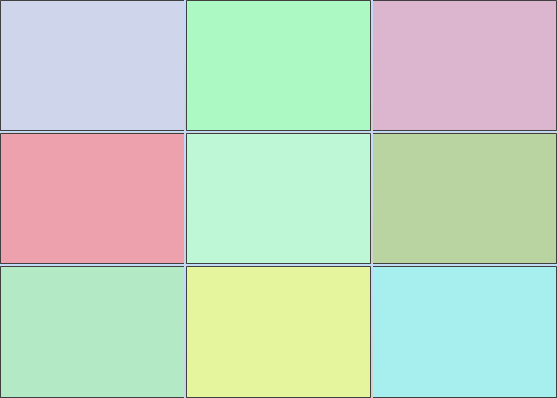

Building Advanced Layouts
Building Advanced Layouts
*
A 5*5 Grid of SplitPanel instances, with the center panel’s SizeMode set
to SplitPanelSizeMode.Fill
*
In order to achieve the layout on the top screen, refer to the code snippet
below:
[C#]
private void CreateGrid(RadSplitContainer container, int cols, int rows, Orientation orientation, bool centerFill)
{
container.Orientation = orientation;
for (int i = 0; i < rows; i++)
{
RadSplitContainer newContainer = new RadSplitContainer();
newContainer.Orientation = Orientation.Vertical;
newContainer.SizeInfo.AbsoluteSize = new Size(100, 100);
for (int j = 0; j < cols; j++)
{
SplitPanel panel = CreateSplitPanel();
panel.SizeInfo.AbsoluteSize = new Size(100, 100);
newContainer.SplitPanels.Add(panel);
}
container.SplitPanels.Add(newContainer);
}
if (centerFill)
{
(container.SplitPanels[rows / 2] as RadSplitContainer).SplitPanels[cols / 2].SizeInfo.SizeMode = Telerik.WinControls.UI.Docking.SplitPanelSizeMode.Fill;
}
}
// color helper method
Random random = new Random();
private SplitPanel CreateSplitPanel()
{
SplitPanel panel = new SplitPanel();
Color back = Color.FromArgb(this.random.Next(155, 255), this.random.Next(155, 255), this.random.Next(155, 255));
panel.SplitPanelElement.Fill.BackColor = back;
panel.SplitPanelElement.Fill.GradientStyle = GradientStyles.Solid;
return panel;
}
[VB.NET]
Private Sub CreateGrid(ByVal container As RadSplitContainer, ByVal cols As Integer, ByVal rows As Integer, ByVal orientation As Orientation, ByVal centerFill As Boolean)
container.Orientation = orientation
For i As Integer = 0 To rows - 1
Dim newContainer As New RadSplitContainer()
newContainer.Orientation = orientation.Vertical
newContainer.SizeInfo.AbsoluteSize = New Size(100, 100)
For j As Integer = 0 To cols - 1
Dim panel As SplitPanel = CreateSplitPanel()
panel.SizeInfo.AbsoluteSize = New Size(100, 100)
newContainer.SplitPanels.Add(panel)
Next j
container.SplitPanels.Add(newContainer)
Next i
If centerFill Then
TryCast(container.SplitPanels(rows \ 2), RadSplitContainer).SplitPanels(cols \ 2).SizeInfo.SizeMode = Telerik.WinControls.UI.Docking.SplitPanelSizeMode.Fill
End If
End Sub
' color helper method
Private random As New Random()
Private Function CreateSplitPanel() As SplitPanel
Dim panel As New SplitPanel()
Dim back As Color = Color.FromArgb(Me.random.Next(155, 255), Me.random.Next(155, 255), Me.random.Next(155, 255))
panel.SplitPanelElement.Fill.BackColor = back
panel.SplitPanelElement.Fill.GradientStyle = GradientStyles.Solid
Return panel
End Function
What we are doing here is to create a number (specified by the "rows"
parameter) of split containers and for each container to add the desired number
(defined by the "cols" parameter) split panels. When we have a descendant split
panel with Size Mode set to fill, then all other descendants are sized
absolutely to allow the Fill panel occupy entire remaining size. The layout
engine is smart enough to traverse the entire layout tree, thus allowing the
fill panel to reside at any branch.
If we do not apply the Fill size mode to the center panel, then we have
evenly auto-sized panels.

A 3*3 Grid of SplitPanel instances, all auto-sized
Size Restrictions
Each SplitPanelSizeInfo instance has MinimumSize and MaximumSize members,
which control the allowed size boundaries for the owning SplitPanel instance.
The following code demonstrates how to utilize these features:
[C#]
private void ApplyPanelRestrictions(SplitPanel panel, Size minSize, Size maxSize)
{
SplitPanelSizeInfo sizeInfo = panel.SizeInfo;
sizeInfo.MinimumSize = minSize;
sizeInfo.MaximumSize = maxSize;
}
[VB.NET]
Private Sub ApplyPanelRestrictions(ByVal panel As SplitPanel, ByVal minSize As Size, ByVal maxSize As Size)
Dim sizeInfo As SplitPanelSizeInfo = panel.SizeInfo
sizeInfo.MinimumSize = minSize
sizeInfo.MaximumSize = maxSize
End Sub

*
The green panel in the center is with applied size
restrictions.
*
These settings are considered by both the layout engine and the splitter
logic, which will clamp the drag hint to visually emphasize on the
restrictions.